캡처 기준 — 2026-07-22 전량 재생성
18장 모두 현재 코드·당시 브랜드로 다시 촬영했습니다. 실 LLM(로컬 Gemma)·PostgreSQL(pgvector·그래프)을
띄운 상태에서 실제 클릭·실제 API 응답을 찍은 것이며, 손으로 그린 목업이 아닙니다.
재생성 방법: scripts/pg.py start → scripts/pg.py setup →
local_model_server.py → run_dev_server.py → capture_screenshots.py(01–08) ·
capture_screenshots_admin.py(09–12) · capture_screenshots_mcp.py(13–14) ·
capture_screenshots_customer.py(15–18)
이 문서를 읽는 방법
화면별로 나열하지 않고 사용자 흐름 순서로 배열했습니다. 특히 거부 화면(422·409)은 버그가 아니라 설계된 방어 동작입니다 — 이 프로젝트에서 가장 중요한 부분이라 흐름 2에 모아 뒀습니다.
흐름 목록
- 상담·탐색 — 질문에서 근거 있는 답까지 (01–03)
- 안전한 주문 — 미리보기·승인과 3가지 거부 경로 (04–08)
- 권한과 운영 — 401·403·200과 인덱스 상태 (09–12)
- 연동 검증 — MCP 도구 목록·호출 (13–14)
- 고객 채널 — 스토어·화상·얼굴 2차인증 (15–17)
- 성능 검증 — 얼굴인식 백엔드 실측 (18)
흐름 1 상담·탐색 고객 · 운영 공통
질문을 받아 문서에서 근거를 찾고, 출처와 함께 답하거나 근거가 없으면 물러납니다.
01AI 에이전트 상담/static/index.html · :8080
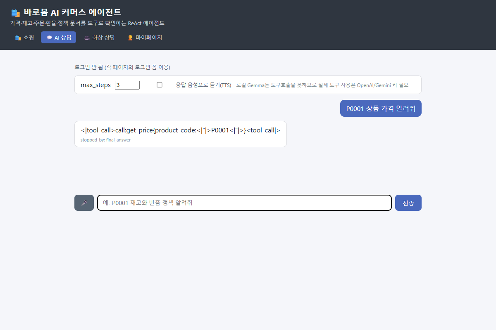
- 사용자 목표
- 자연어로 묻고, 상품·주문 정보까지 포함된 답을 받는다
- 입력·행동
- “P0001 상품 가격 알려줘” 입력 → 전송
- 기대 결과
- 설계상: 에이전트가
get_price 도구를 호출하고, 밟은 단계와 종료 사유가 함께 표시된다
- 이 캡처에 실제로 보이는 것
- 도구가 실행되지 않았습니다. 답변 영역에
<|tool_call|>call:get_price{…} 같은 원시 문자열이 그대로 찍혀 있고 단계 목록은 비어 있습니다.
로컬 Gemma가 도구 호출(tool calling)을 지원하지 않아 도구를 부르는 대신 그 형식을 흉내낸 텍스트를 최종 답변으로 낸 것입니다.
화면 상단에도 “로컬 Gemma는 도구호출을 못하므로 실제 도구 사용은 OpenAI/Gemini 키 필요”라고 적혀 있습니다.
버그가 아니라 로컬 모델의 제약이며, 실키를 넣으면 도구가 실제로 실행되고 단계가 채워집니다.
- 확인할 안전장치
- 종료 사유(
stopped_by: final_answer)가 항상 노출됩니다 — 왜 멈췄는지 숨기지 않습니다(다른 값: duplicate_tool_call·max_steps).
에이전트는 읽기 전용 도구만 쓸 수 있어 스스로 주문을 만들지 못합니다. max_steps를 화면에서 조절할 수 있어 루프가 무한정 돌지 않습니다.
관련: 03(근거 기반 QA) · 15(스토어에서 실제 주문)
02RAG 벡터 검색/static/rag.html · :8081 운영 전용
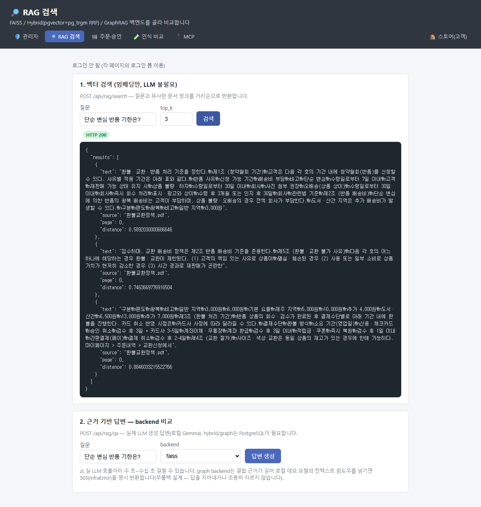
- 사용자 목표
- 어떤 문서 조각이 근거로 잡히는지 직접 확인한다(운영자·개발자용)
- 입력·행동
- 질의 입력 → 검색. 백엔드(
faiss/hybrid/graph) 선택 가능
- 기대 결과
- 근거 목록 + 출처 문서명·위치·정규화 점수
- 확인할 안전장치
- 점수가 [0,1]로 정규화돼 백엔드가 달라도 같은 척도로 비교됩니다(포트 중립성). 이 화면은 고객 포트에 존재하지 않습니다(404).
관련: 03(같은 검색으로 답변 생성) · 전체 설명 §03 RetrieverPort
03근거 기반 QA (Hybrid 백엔드)/static/rag.html · :8081
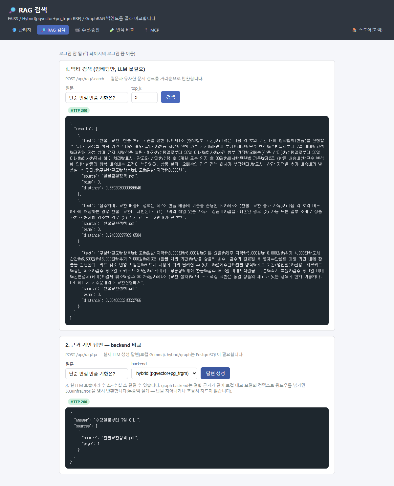
- 사용자 목표
- 검색으로 끝내지 않고 근거만 사용한 답변을 받는다
- 입력·행동
- 질문 → 백엔드
hybrid 선택 → QA 실행
- 기대 결과
- 답변 + 인용된 출처. 근거가 없으면 답을 만들지 않고 근거부족으로 반환
- 확인할 안전장치
- abstention — 이 프로젝트의 핵심입니다. 모르면 지어내지 않고, 답 못 한 질문은 PII를 마스킹해 지식갭 큐에 쌓입니다(12번 화면에서 확인).
- 한계
- “근거로 지지됨”은 사실이라는 뜻이 아닙니다. 근거 자체가 낡거나 틀렸으면 통과합니다.
관련: 12(지식갭 확인) · 바운티 브리핑(근거성 ≠ 사실성)
흐름 2 안전한 주문 — 거부 경로가 핵심 가장 중요
주문은 “미리보기 → 사용자 명시 승인”으로만 성립합니다. 아래 3가지 거부는 모두 의도된 방어입니다.
04주문 미리보기 (DB 변경 없음)/static/orders.html · :8081
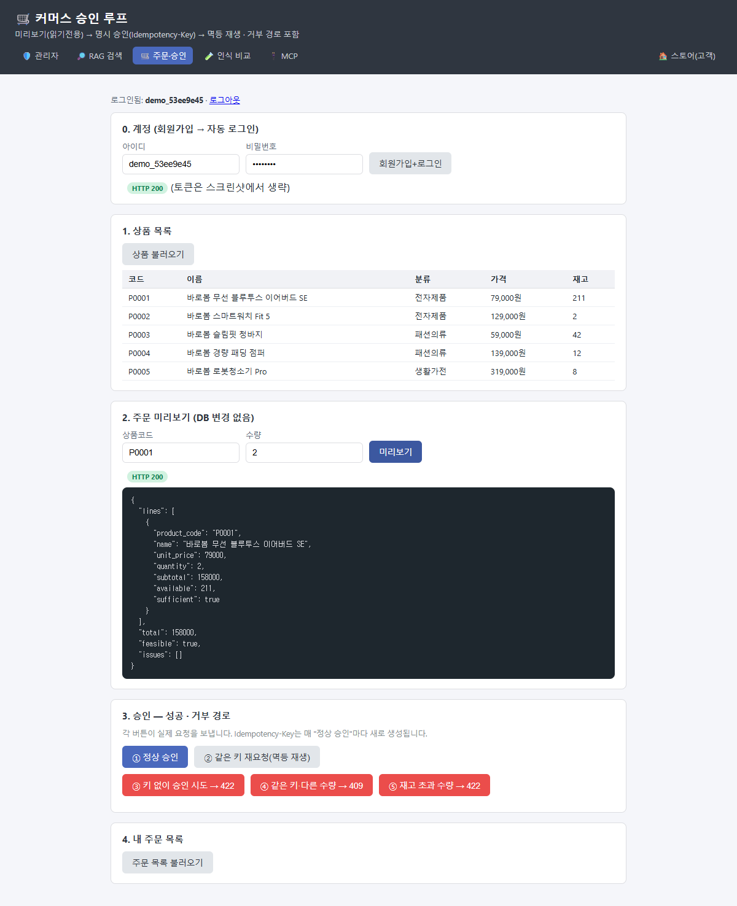
- 사용자 목표
- 주문을 걸기 전에 재고·금액을 확인한다
- 입력·행동
- 상품코드·수량 입력 → 미리보기
- 기대 결과
lines(단가·소계·재고·충족여부) · total · feasible · issues- 확인할 안전장치
- 읽기 전용입니다 — 이 호출로는 재고가 줄지 않고 주문도 생기지 않습니다. 응답에 “미리보기이며 주문이 생성되지 않았다”는 문구가 포함돼, 승인 토큰으로 오해되지 않게 했습니다.
관련: 05(승인) · 06~08(거부 경로)
05정상 승인 + 멱등 재생POST /api/orders · Idempotency-Key 필수
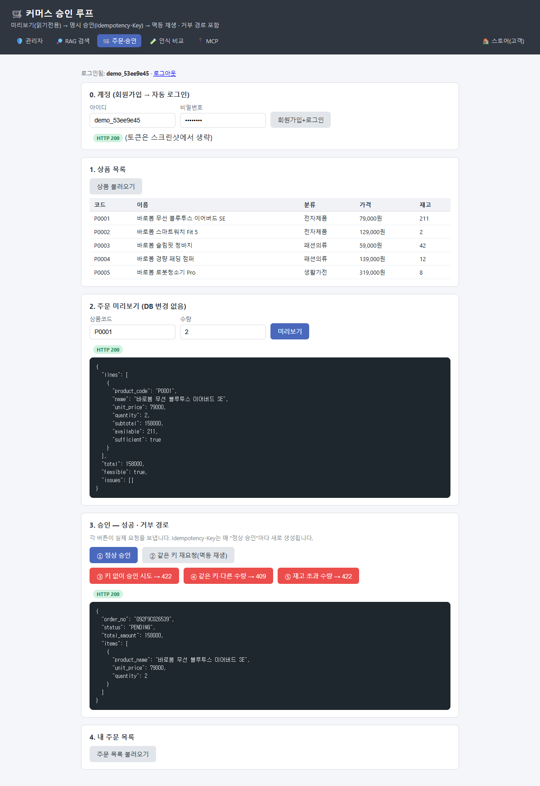
- 사용자 목표
- 미리보기 내용대로 주문을 확정한다
- 입력·행동
- ① 정상 승인 → ② 같은 키로 재요청
- 기대 결과
- ①에서 주문번호 발급, ②는 새 주문을 만들지 않고 기존 주문을 그대로 반환(재고 추가 차감 0)
- 확인할 안전장치
- 네트워크 재시도·중복 클릭으로 이중 주문이 생기지 않습니다. 재고 차감은
UPDATE … WHERE stock >= qty 조건부 원자 연산이라 동시 요청에도 초과판매가 나지 않습니다.
관련: 07(같은 키·다른 내용은 409로 거부)
06키 없이 승인 시도 → 422거부 경로 ①
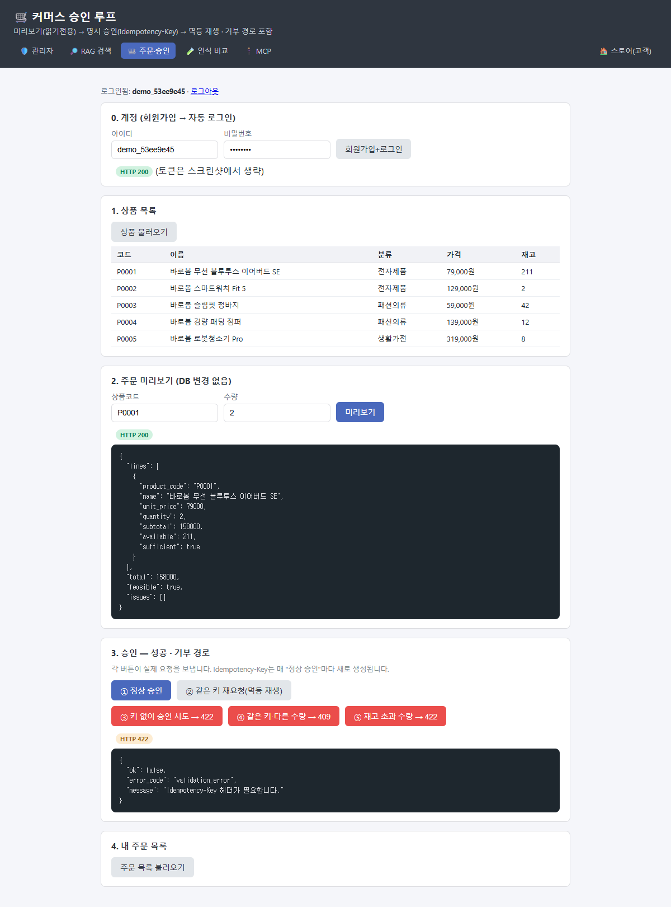
- 무슨 일이 일어났나
Idempotency-Key 헤더 없이 주문을 시도 → 422로 거부- 왜 이게 옳은가
- 서버가 임의로 키를 만들어 주면 멱등성이 무력화됩니다(재시도마다 새 키 = 중복 주문). 그래서 키를 필수로 두고, 없으면 실패시킵니다 — 무폴백 원칙의 대표 사례입니다.
- 오해 방지
- 이 422는 버그가 아닙니다. 기존 호출부를 고쳐야 했던 의도적 호환성 파괴였습니다.
07같은 키 · 다른 내용 → 409거부 경로 ②
- 무슨 일이 일어났나
- 이미 쓴 키로 내용을 바꿔 요청 → 409 Conflict
- 왜 이게 옳은가
- 같은 키는 “같은 요청”이어야 합니다. 내용이 다르면 재생이 아니라 키 오용이므로 거부합니다. 요청 내용을 JSON 정규 지문으로 비교해 판별합니다.
08재고 초과 주문 → 422 · 주문 목록거부 경로 ③
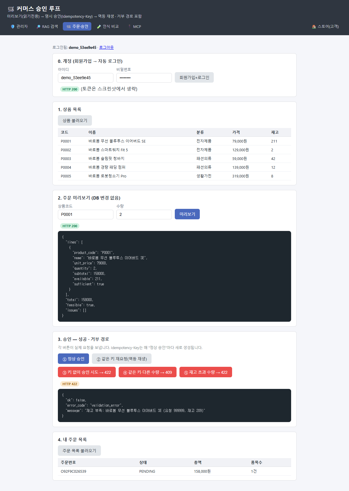
- 무슨 일이 일어났나
- 재고보다 많은 수량 주문 → 422. 아래에 확정된 주문 목록 표시
- 왜 이게 옳은가
- 미리보기에서
feasible: false로 미리 알려주고, 승인 단계에서도 DB 레벨에서 다시 막습니다(이중 방어). 미리보기와 승인 사이에 재고가 줄어드는 경쟁 상황을 가정한 설계입니다.
관련: 04(feasible 필드) · 11(운영자가 보는 주문 목록)
흐름 3 권한과 운영 운영 전용 :8081
같은 화면이 권한에 따라 다르게 응답합니다. 401 → 403 → 200 순서로 보세요.
09미인증 접근 → 401/static/admin.html
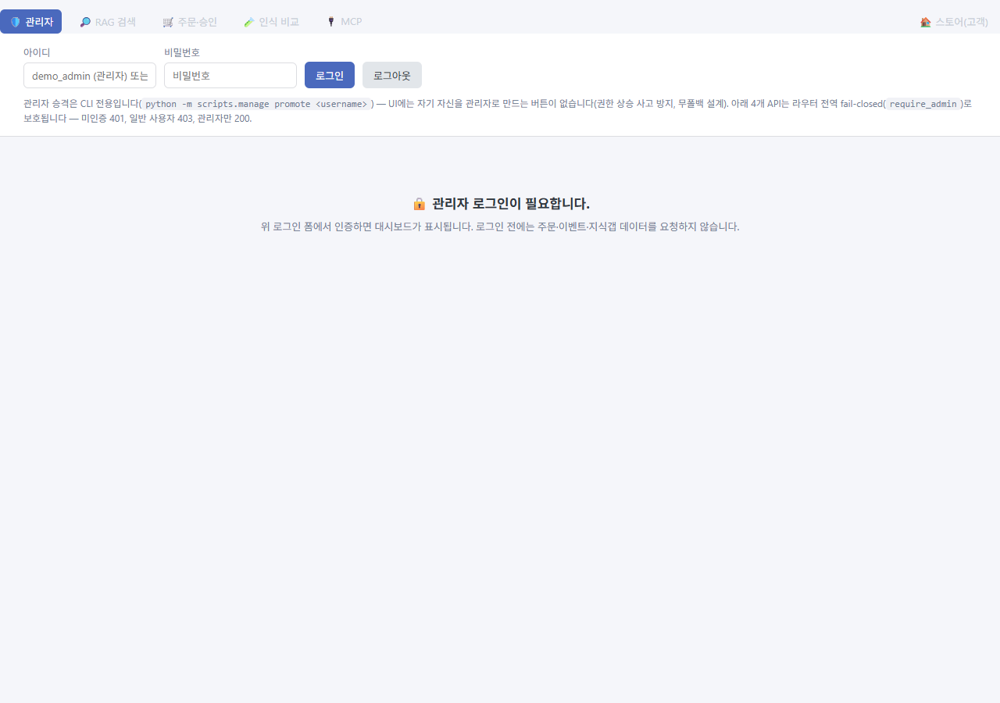
- 무슨 일이 일어났나
- 로그인 없이 관리자 데이터 요청 → 401. 화면은 “관리자 로그인이 필요합니다” 안내만 표시
- 확인할 안전장치
- 관리자 라우터는 라우터 전역 의존성으로 잠겨 있습니다. 엔드포인트마다 붙이는 방식은 새 엔드포인트에서 누락되므로, 전역으로 걸고 테스트로 고정했습니다(fail-closed).
10일반 사용자 → 403로그인했지만 권한 없음
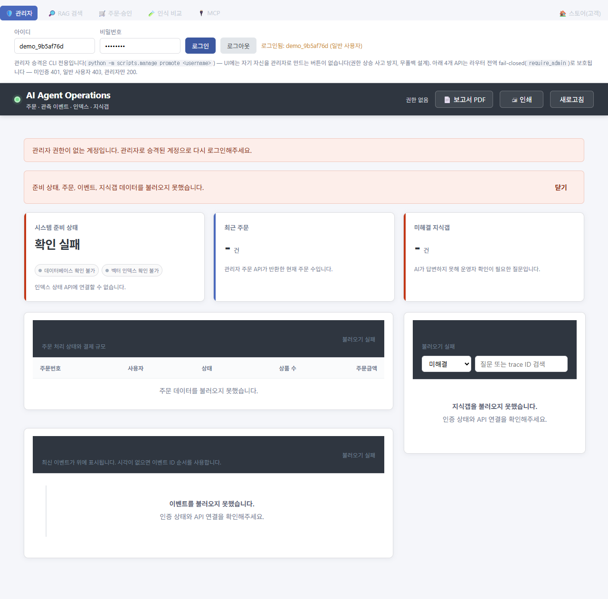
- 무슨 일이 일어났나
- 정상 로그인한 일반 사용자가 관리자 API 요청 → 403
- 확인할 안전장치
- 401(누구인지 모름)과 403(누구인지 알지만 권한 없음)을 구분합니다. 권한은 JWT에 넣지 않고 매 요청 DB에서 조회하므로, 관리자를 강등하면 토큰 재발급 없이 즉시 403이 됩니다.
11관리자 → 200 주문 현황권한 부여는 CLI 전용
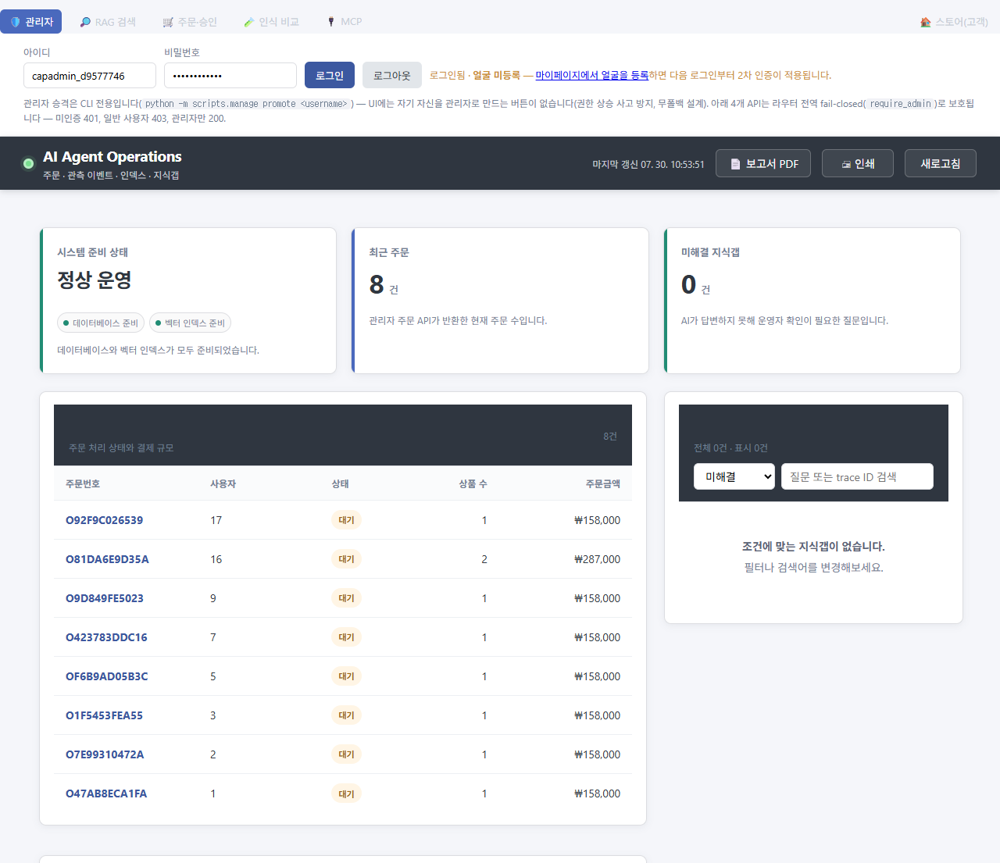
- 사용자 목표
- 주문 처리 상태와 결제 규모를 확인한다
- 입력·행동
python -m scripts.manage promote <username> 후 재조회- 확인할 안전장치
- 관리자 승격 UI 버튼이 없습니다. CLI 전용이며, 마지막 관리자의 강등은 거부됩니다(잠김 방지). 승격·강등은 감사 기록으로 남습니다.
관련: 08(고객이 만든 주문이 여기 보임)
12시스템 준비 상태 · 지식갭/api/admin/index · knowledge-gaps
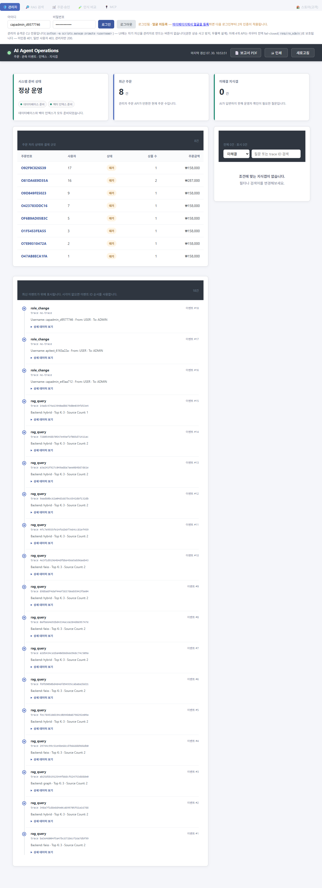
- 사용자 목표
- DB·벡터 인덱스가 준비됐는지, AI가 답 못한 질문이 무엇인지 확인한다
- 기대 결과
- 준비 상태 표시 + 미해결 지식갭 목록
- 확인할 안전장치
- 기동 시 자동으로 테이블·인덱스를 만들지 않습니다(명시적
manage 명령). 미준비 상태를 조용히 빈 결과로 감추지 않고 명시적으로 알립니다. 지식갭 질문은 PII 마스킹 후 저장되고 보존기간이 지나면 파기합니다.
- 한계
- 마스킹은 정규식 기반이라 완전 비식별이 아닙니다(이름·주소·IP 미탐지). 그래서 관리자 전용 노출 + 출력 재마스킹 + 파기를 함께 씁니다.
관련: 03(abstention이 지식갭을 만든다)
흐름 4 연동 검증 — MCP 운영 전용
외부 AI 클라이언트가 우리 기능을 표준 프로토콜로 쓸 수 있는지 확인합니다.
13MCP 도구 목록/static/mcp.html · 도구 10개
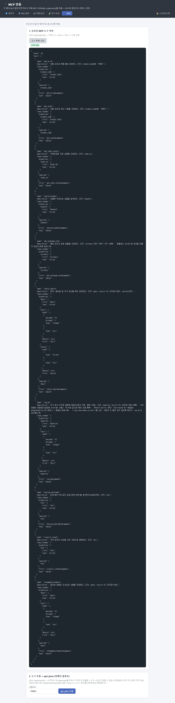
- 사용자 목표
- 외부에 노출되는 도구 목록과 인자 규격을 확인한다
- 기대 결과
- 커머스 5 + RAG 2 + ML 3 = 도구 10개와 각 설명·인자
- 확인할 안전점
- 노출 도구는 읽기 전용입니다(쓰기 도구 없음). 도구 인자는 스키마로 검증되고, 범위 밖 값은 검증 오류가 됩니다.
14MCP 도구 호출 — get_priceREST와 같은 유스케이스 공유
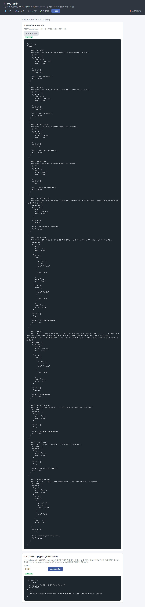
- 사용자 목표
- 도구를 실제로 호출해 응답 형태를 본다
- 기대 결과
- 상품명·가격이 구조화된 형태로 반환
- 확인할 안전장치
- parity — MCP와 REST가 같은 유스케이스·같은 변환 코드를 씁니다. 구현이 두 벌로 갈라져 응답이 달라지는 일을 테스트로 고정했습니다(같은 입력 → 완전히 같은 dict).
- 한계
- MCP는 호출마다 새 프로세스를 띄우는 학습용 구조입니다. 임베딩 도구 지연 문제는 근본원인을 특정하지 못해 우회책(사전 로딩)을 씁니다.
흐름 5 고객 채널 고객 :8080
고객이 실제로 쓰는 화면입니다. 운영 도구는 이 포트에 존재하지 않습니다(404).
15스토어 — 장바구니와 로그인 요구/ 또는 /static/shop.html · :8080
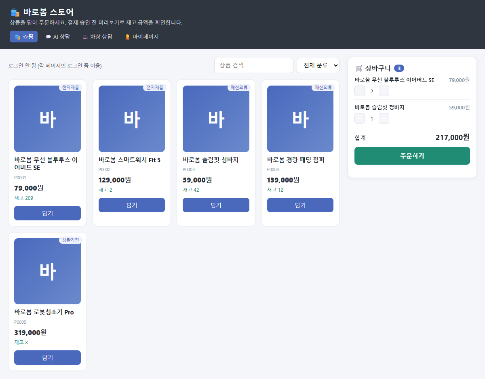
- 사용자 목표
- 상품을 담고 주문한다
- 입력·행동
- 상품 담기 → 장바구니 확인 → 주문하기
- 기대 결과
- 장바구니에 수량·합계가 누적되고, 주문 시 로그인 모달이 뜬다
- 확인할 안전장치
- 모달 문구가 “얼굴을 등록한 계정은 웹캠 2차 인증이 추가됩니다”라고 미리 알립니다. 주문은 로그인 없이 진행되지 않고, 이후 미리보기→승인 경로를 그대로 탑니다(흐름 2와 동일 계약).
- 참고
- 상품 이미지는 플레이스홀더입니다(실제 상품 사진 없음).
관련: 04·05(같은 주문 계약) · 16(얼굴 2차인증 등록)
16마이페이지 — 얼굴 로그인 2차 인증/static/mypage.html · :8080
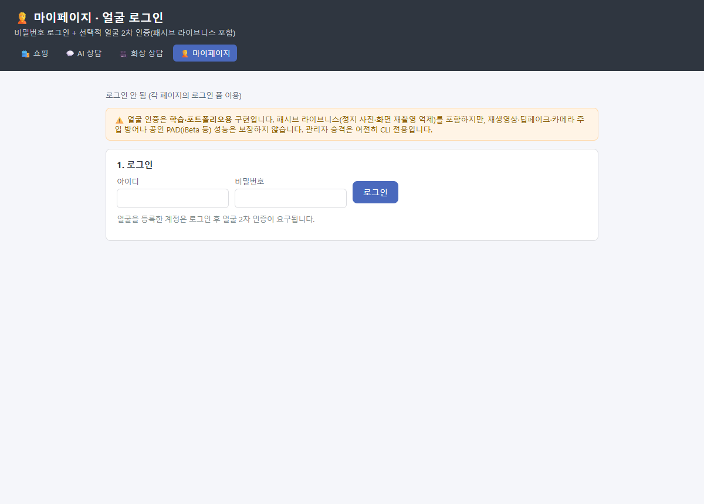
- 사용자 목표
- 비밀번호 외에 얼굴을 두 번째 인증 수단으로 등록한다(선택)
- 입력·행동
- 로그인 → 웹캠으로 여러 장 촬영 → 등록. 이후 로그인 시 얼굴 확인 단계 추가
- 기대 결과
- 등록 성공 시 사용된 촬영 장수 표시. 다음 로그인부터 비밀번호 통과 후 얼굴 단계
- 확인할 안전장치
- 비밀번호만 맞으면 최종 토큰을 주지 않습니다 — 얼굴 등록 계정은
pre2fa 챌린지만 받고, 얼굴 단계를 통과해야 최종 토큰이 나옵니다(우회 경로 없음). 챌린지는 일회성이라 재사용·동시요청이 차단됩니다. 품질 미달 사진은 조용히 통과시키지 않고 재촬영을 요구합니다.
- 한계
- 라이브니스(사진·화면 위조 판별)는 단일 모델이고 임계값이 튜닝되지 않았습니다. 실 웹캠 라이브 정확도는 검증되지 않았습니다.
관련: 18(인식 백엔드 실측 비교)
17화상 상담/static/video.html · :8080
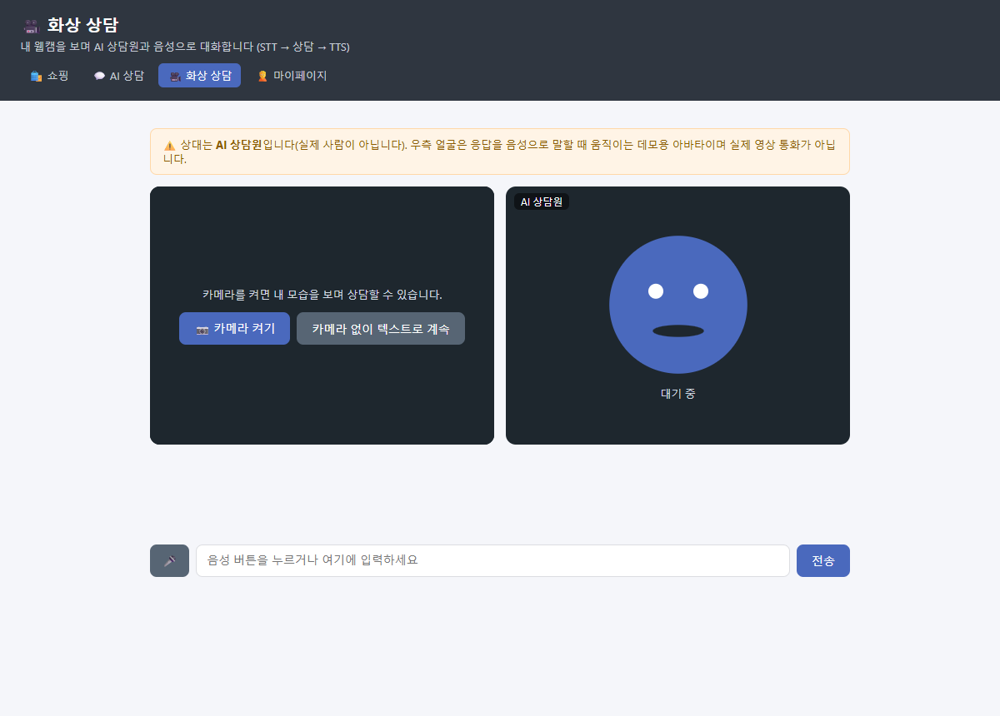
- 사용자 목표
- 말로 묻고 음성으로 답을 듣는다
- 입력·행동
- 카메라·마이크 허용 → 말하기 → 음성 인식(STT) → 상담 → 음성 답변(TTS)
- 기대 결과
- 인식된 문장과 답변이 화면에 표시되고 음성으로 재생
- 확인할 안전장치
- STT·TTS 모두 로컬에서 동작합니다(API 키 불필요, 음성이 외부로 나가지 않음). 카메라 없이 텍스트로도 계속할 수 있어 권한 거부가 막다른 길이 되지 않습니다.
- 한계
- 실시간 스트리밍이 아니라 구간 단위 처리입니다. TTS는 Windows 음성 합성에 의존합니다.
흐름 6 성능 검증 운영 전용
“이 모델이 더 좋다”를 주장으로 두지 않고 화면에서 실측하게 만들었습니다.
18얼굴인식 백엔드 벤치마크/static/facebench.html · :8081 관리자 전용
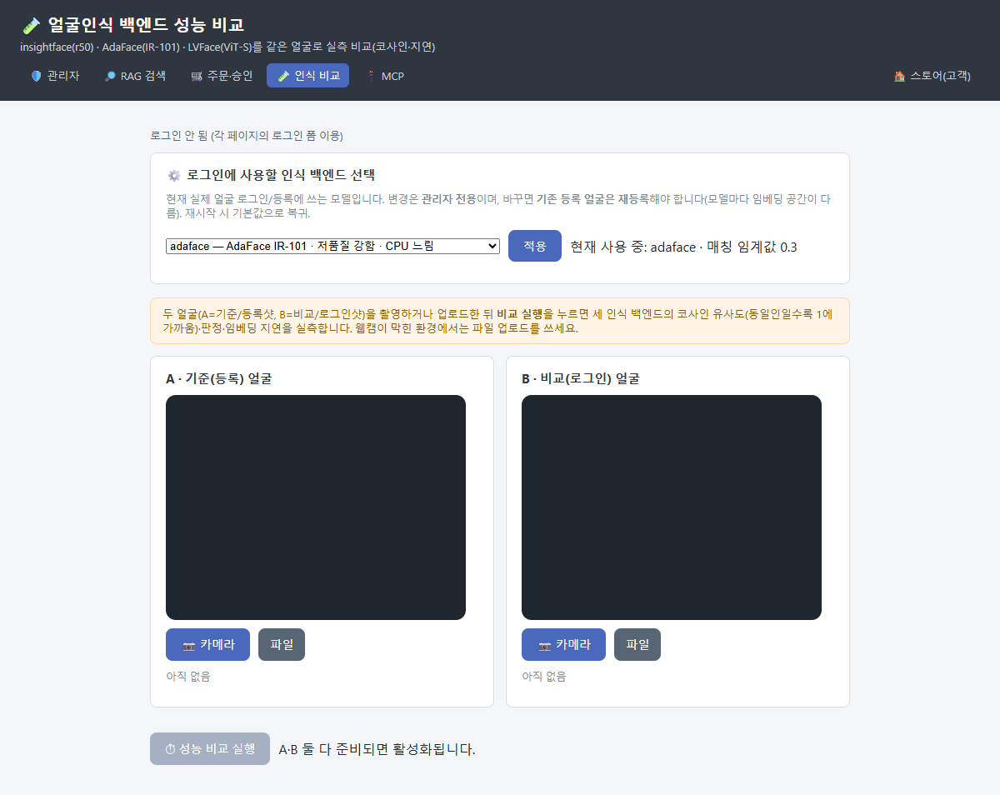
- 사용자 목표
- 3개 인식 백엔드(AdaFace·LVFace·insightface)를 같은 사진으로 비교한다
- 입력·행동
- A·B 얼굴 이미지(웹캠 촬영 또는 업로드) → 실행
- 기대 결과
- 백엔드별 코사인 유사도 · 동일인 판정 · 지연(ms) 표. 현재 사용 중인 백엔드 표시
- 확인할 안전장치
- 3개 모델을 모두 도는 무거운 연산이라 관리자 전용이고 업로드 크기·장수 상한이 걸려 있습니다(무인증 DoS 표면 차단). 백엔드 변경도 관리자만 가능하며, 임베딩 공간이 달라 기존 등록 얼굴은 재등록이 필요하다고 화면에 경고합니다.
- 해석 주의
- 표의 지연은 최초 호출 시 모델 로딩이 포함됩니다. 워밍업 후 값과 다릅니다.
관련: 16(여기서 고른 백엔드가 실제 로그인에 쓰임)
화면 ↔ 기능 추적표
캡처에 없는 것
지식 바운티 화면은 없습니다 — 현재 API만 있고 UI를 만들지 않았습니다(브리핑 참조).
관리자 요약 보고서 PDF도 캡처에 포함되지 않았습니다. 캡처는 실행 시점의 상태이며 이후 변경된 부분이 있을 수 있습니다.